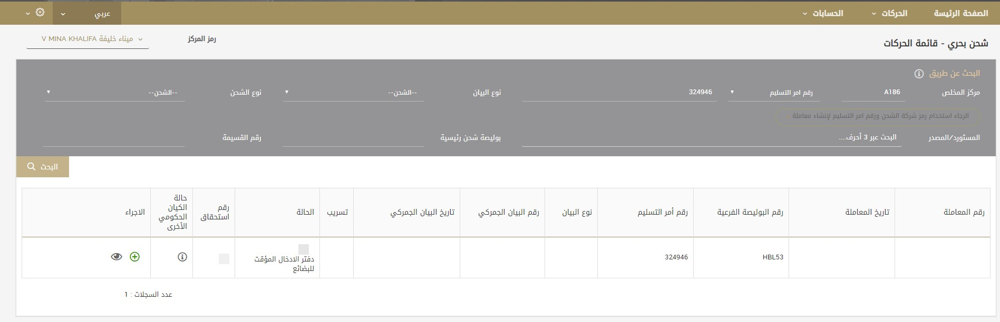
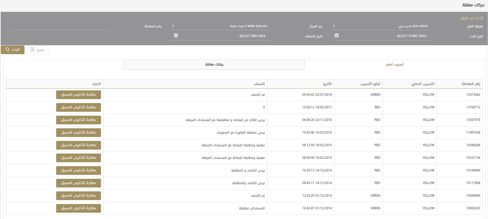

معالجة إعلان الجمارك - دليل المستخدم 1.0
1 المقدمة
تصف هذه الوثيقة تطبيق Mamar الذي يهدف إلى توفير بيئة فعالة لإدارة ومراقبة عملية التصريح الجمركي.
يشمل النطاق الوظائف التالية:
- الإعلانات
- المعاملات المعلقة
- التحويل الآلي المباشر للرسوم
- المحاسبة
- تسجيل المستورد
- تفويض الوكيل
2. وحدات غطت
- الإعلانات
- التسجيل
- المحاسبة
- إجراءات التخليص المسبق
- التحويل الآلي المباشر للرسوم
3. التعاريف#عودة إلى الأعلى
وصف الإشارات والرموز المستخدمة في تطبيق ممر
| # | الرمز | الوصف |
|---|---|---|
| 1 | يستخدم هذا الرمز لغرض الإطلاع على صفحة الإفصاح الجمركي. | |
| 2 | يستخدم هذا الرمز لغرض إصدرا نسخة مطابقة عن الإفصاح الجمركي. | |
| 3 | يستخدم هذا الرمز لغرض تنزيل البيان الجمركي للإستيراد / التصدير | |
| 4 | يستخدم هذا الرمز لغرض الوضول إلى اعدادات التطبيق . | |
| 5 | يستخدم هذا الرمز لغرض الوصول إلى شهادة خروج / دخول الجمارك | |
| 6 | يُشير هذه الرمز إلى أن لون قناة الإفصاح الجمركي Red. | |
| 7 | يُشير هذه الرمز إلى أن لون قناة الإفصاح الجمركي Green. | |
| 8 | يُشير هذه الرمز إلى أن لون قناة الإفصاح الجمركي Yellow. | |
| 9 | يستخدم هذا الرمز لغرض التحقق من صحة الإفصاح. | |
| 10 | يستخدم هذا الرمز لغرض الوصول إلى خيار الاعفاء الإلكتروني | |
| 11 | يستخدم هذا الرمز لغرض تحرير معاملة. | |
| 12 | يستخدم هذا الرمز لغرض حذف معاملة. | |
| 13 | يستخدم هذا الرمز لغرض إنشاء معاملة. |
4. تسجيل الدخول لتطبيق بوابة المقطع #عودة إلى الأعلى
4.1. تسجيل الدخول لبوابة المقطع
يتم الوصول إلى تطبيق ممر عبر الرابط: XXXXXXX
بإمكانك الاطلاع على الشاشه أدناه:
بعد ذلك، قم بتسجيل الدخول إلى تطبيق ممر وذلك بتزويد اسم المستخدم وكلمة السر.
ملاحظة:يتولى مكتب الخدمة الخاص بنا توفير بيانات اعتماد حساب المستخدم
المرتبط بملفك الشخصي.
4.2. نسيت كلمة السر
في حال نسيت كلمة السر، يقدم لك التطبيق ميزة استرجاع / تعيين كلمة السر على شاشة التسجيل. من أجل تغيير كلمة السر:

- انقر على نسيت كلمة السر؟ الرابط.
- ستظهر شاشة إعادة تعيين كلمة السر.
- أدخل اسم المستخدم الخاص بك والبريد الإلكتروني المسجل.
- انقر زر إعادة تعيين كلمة السر.
- سوف تتلقى رسالة بالبريد إلكتروني مع رابط لإعادة تعيين كلمة السر.
- انقر على الرابط وسيتم عرض صفحة إعادة تعيين كلمة السر.
- قم بإعادة تعيين كلمة السر وستتلقي بعدها رسالة بالبريد الإلكتروني لتأكيد تعيين كلمة السر.
5. لوحة التطبيق#عودة إلى الأعلى
5.1. اختيار الحساب
بعد تسجيل الدخول بنجاح، سيطالب النظام من المستخدم الذي يمتلك أكثر من حساب جمركي تحديد الحساب الذي يريد إجراء المعاملة من خلاله.
5.2. لوحة المستخدم
بعد قيام المستخدم بتحديد الحساب المناسب، سيتم إعادة توجيهه إلى اللوحة الرئيسية. تحتوي لوحة المستخدم على ملخص لحجم الإعلان الجمركي الدوري بأساليب مختلفة ولأنواع الفواتير المختلفة. سيتمكن المستخدم أيضًا من الوصول إلى الخدمات الأخرى مثل طلب النقل والمواعيد والخدمات الصناعية .
6. التخليص الجمركي #عودة إلى الأعلى
6.1. إنشاء البيان الجمركي
6.1.1. إنشاء إقرار الشحن البحري
المعاملات → الشحن البحري → قائمة المعاملات
بالنسبة إلى المعاملات البحرية، يتم إنشاء الفاتورة أوتوماتيكيًا من قِبل إنشاء المعاملات. يمكن للمستخدم البحث عن معلومات الشحن عن طريق رمز الوكيل ورقم المعاملة في لوحة البحث ثم النقر على زر بحث. بمجرد ظهور المعلومات المتوافقة في قائمة المعاملات، يمكن للمستخدم النقر على لإنشاء المعاملة أو النقر على لعرض معلومات البيان الجمركي وتفاصيل المعاملة قبل إنشاء المعاملة.
تفاصيل المعاملة
بعد مراجعة التفاصيل، يمكن للمستخدم طلب أي تغيير في معلومات البيان الجمركي والمعاملة إلى وكيل الشحن وذلك باستخدام قسم التعليق في لائحة استعراض البيان الجمركي وتفاصيل المعاملة.
متى ما نجح المستخدم في إنشاء المعاملة، سيتمكن من الانتقال إلى تفاصيلها.
6.1.2. تفاصيل الشحنة
عند إدخال تفاصيل الشحنة، ستظهر تفاصيل وضعية الشحن البحري تلقائيًا من المانفست ومن طلب التسليم، ومن الممكن تحديثها. سيحتاج المستخدم إلى إدخال المعلومات التالية يدويًا لوضعيات أخرى.
| الحقل | الوصف |
|---|---|
| نوع الفاتورة |
حدّد نوع الفاتورة المطلوب من القائمة المنسدلة.
يشير نوع الفاتورة إلى نوع البيان الجمركي.
قد يكون نوع البيان الجمركي استيراد، تصدير، إلخ.
يمكن تقديم البيان الجمركي لأي نوع من الفواتير التالية:
|
| رمز المركز | حدد رمز المركز من قائمة المراكز المقبولة التي يمكنك الوصول إليها لتقديم البيان الجمركي. |
| الحالة | يشير إلى حالة المعاملة. يتم إنشاء الحالة المتوقعة للمعاملة وتخليصها مسبقًا. |
| هيئات حكومية أخرى | انقر على رابط "انقر للاطلاع على موافقات الهيئات الحكومية الأخرى" للاطلاع على موافقات الهيئات الحكومية الأخرى. |
| قم الرحلة البحرية / رقم الشاحنة / رقم الطائرة | أدخل رقم السفينة في حالة الشحن البحري، رقم الطائرة في حالة الشحن الجوي، أو رقم الشاحنة في حالة الشحن البرّي. |
| سم السفينة / اسم خطوط الطيران / نوع النقل | أدخل اسم السفينة في حالة الشحن البحري، اسم شركة الطيران في حالة الشحن الجوي. سيتم إدخال "شاحنة" كنوع النقل في حالة الشحن البرّي. |
| لوقت المتوقع للوصل / الوقت الفعلي للوصول | أدخل أو اختر الوقت المحدّد للوصول / تاريخ الوصول الفعلي للسفينة / الطائرة / الشاحنة |
| نوع البضاعة | حدد نوع البضائع للإفصاح الجمركي.
أنواع البضائع على النحو التالي:
|
| رقم سند الجمارك | رقم البيان الجمركي |
| مصدر / وجهة الشحن | أدخل أو حدد مصدر/ وجهة الشحن كما ورد في البيان الجمركي. |
| البيان الجمركي الرئيسي / البيان الجمركي الجوي الرئيسي | أدخل البيان الجمركي الرئيسي في حالة الشحن البحري والبري / أو البيان الجمركي الجوي الرئيسي حالة الشحن الجوي. |
| البيان الجمركي الصادر عن وكيل الشحن / وكيل الشحن الجوي | أدخل البيان الجمركي الصادر عن وكيل الشحن في حالة الشحن البحري أو البري / أو البيان الجمركي الجوي الصادر عن وكيل الشحن في حالة الشحن الجوي / لا يتوفر سند شحن جوي صادر عن وكيل الشحن في البيان الجمركي الرئيسي / يجب إدخال البيان الجمركي الجوي الرئيسي في حقل السند الجمركي الصادر عن وكيل الشحن/ حقل الشحن الجوي الصادر عن وكيل الشحن. |
| وكيل السيارات | أدخل اسم وكيل السيارات. سيتم استخدام هذا الحقل في حال وجود شحنة دحرجة (رورو) بغرض الوصول إلى وكيل السيارات لإدخال تفاصيل شاصي السيارة. |
| وكيل الشحن | أدخل اسم وكيل الشحن للإقرار الجمركي |
| رقم المعاملة | أدخل رقم المعامة للإقرار الجمركي |
| تاريخ المعاملة | أدخل تاريخ إصدار المعاملة |
| انتهاء صلاحية المعاملة | أدخل تاريخ انتهاء صلاحية المعاملة |
| عملاء المملكة العربية السعودية | أدخل أو حدد رمز المستورد السعودي للمقاصة لوجهة مثل الممكلة العربية السعودية. في حال لم يكن رمز المستورد معروفًا، يمكن إدخال القيمة الافتراضية "0" |
| مانفست المُرسل إليه | أدخل اسم المُرسل إليه كما ورد في البيان الجمركي |
| بيانات الشاحن | أدخل اسم الشاحن كما ورد في البيان الجمركي |
| طرف الإخطار | أدخل طرف الإخطار كما ورد في البيان الجمركي |
| الوحدة | أدخل وحدة قياس الشحنة |
| الكمية | أدخل كمية الشحنة |
| الوزن الصافي | أدخل الوزن الصافي للشحنة |
| الوزن القائم | أدخل الوزن القائم للشحنة |
| الحجم | أدخل حجم الشحنة |
| وصف البضائع | أدخل وصف البضائع |
| العلامات والأرقام | أدخل العلامات والأرقام كما وردت في البيان الجمركي |
| ملاحظات المعاملة | أدخل ملاحظات المعاملة |
| ملاحظات البيان الجمركي | أدخل ملاحظات البيان الجمركي كما ورد في البيان الجمركي |
| الفاتورة | ضع علامة في الخانة إذا تم إلحاق الفاتورة في قسم المرفقات |
| البيان الجمركي | ضع علامة في الخانة الاختيار إذا تم إرفاق البيان الجمركي في قسم المرفقات |
| شهادة المصدر | ضع علامة في الخانة إذا تم إرفاق شهادة المنشأ في قسم المرفقات |
| قائمة التعبئة | ضع علامة في الخانة إذا تم إلحاق قائمة التعبئة في قسم المرفقات |
| عدد المرفقات | هنا يقوم النظام بعرض عدد المرفقات |
| وصف إضافي | لإدخال الوصف الإضافي، انقر زر وصف إضافي الموجود أدنى حقل وصف البضائع واستخدم زر أضف لإضافة الوصف الإضافي. |
| الإيصالات | |
| رقم الإيصال | هنا يعرض النظام رقم الإيصال الذي تم إنشاؤه للمعاملة |
| النوع | هنا يعرض النظام نوع الإيصال الذي تم إنشاؤه للمعاملة |
| المبلغ | هنا يعرض النظام مبلغ الإيصال الذي تم إنشاؤه للمعاملة |
6.1.2.1 تفاصيل الشاصي
إدخال تفاصيل الشاصي. لإدخال تفاصيل الشاصي، انقر زر تفاصيل الشاصي على شاشة تفاصيل الشحنة..
للبحث عن شاصي موجود، أدخل رقم الشاصي ثم انقر زر ابحث لعرض معلومات الشاصي.
لإضافة شاصي جديد للبيان الجمركي، انقر زر جديد ثم قم بإضافة تفاصيل السيارة كما هو موضح في صورة الشاشة التالية.
6.1.2.2 تفاصيل الحاوية
إدخال تفاصيل الحاوية. لإدخال تفاصيل الحاوية، انقر زر تفاصيل الحاوية في شاشة تفاصيل الشحنة.
للبحث عن حاوية موجودة، أدخل رقم الحاوية وانقر زر ابحث للاطلاع على معلومات الحاوية.
لإضافة حاوية جديدة في البيان الجمركي، انقر زر جديد ثم قم بإضافة تفاصيل الحاوية كما هو موضح في صورة الشاشة التالية.
6.1.2.3 الإعفاءات الرسمية / الموافقة
للبحث عن الإعفاءات والموافقات الخاصة بالبيان الجمركي، انقر زر الإعفاءات الإلكترونية، كما يمكنك طباعة الموافقات باستخدام خيار الطباعة المتاح في نافذة الإعفاءات الإلكترونية.
تفاصيل دفتر إدخال البضائع المؤقت
دفتر إدخال البضائع المؤقت هو مستند جمركي دولي مؤقت للتصدير والاستيراد. يتم استخدام الدفتر لتخليص الجمارك في 87 دولة ومنطقة دون دفع رسوم وضرائب استيراد على البضائع التي سيتم إعادة تصديرها في غضون 12 شهرًا *. يعرف دفتر إدخال البضائع المؤقت أيضًا باسم جوازا البضائع. لإدخال تفاصيل دفتر إدخال البضائع المؤقت، انقر زر تفاصيل دفتر إدخال البضائع المؤقت لتفاصيل الشحنة وأدخل المعلومات الموضحة في صورة الشاشة أدناه.
المرفقات
وكيل الجمارك مسؤول عن تقديم المستندات الداعمة للإفصاح الجمركي مثل الفاتورة، البيان الجمركي، شهادة المنشأ وقائمة التعبئة. لإرسال المستندات الداعمة، انقر زر أرفق في تفاصيل الشحن، ثم انقر زر أرفق.
عند النقر فوق زر أرفق، سيتم توجيه المستخدم إلى الصفحة المخصصة ليتمكن من تحميل وإرفاق المستندات الداعمة.
تفاصيل الفاتورة
بعد إدخال تفاصيل الشحن، ينتقل البيان الجمركي إلى شاشة تفاصيل الفاتورة التي تتكون من الأقسام التالية:
- تفاصيل فاتورة الجمارك: تحتوي على معلومات تتعلق بالبيان الجمركي مثل التعريفة، ورقم إعلان الضريبة الانتقائية، وعميل الائتمان، إلخ.
- الفاتورة: تحتوي على معلومات تتعلق بالفاتورة مثل بلد المنشأ، وشروط الشحن، وسعر الصرف، وعملة الفاتورة
- تفاصيل الفاتورة: تتكون من معلومات حول كل سطر من سطور الفاتورة، مثل رمز الوصف المنسق للسلع ونظام الترميز ونسبة الرسوم وقيمة الفاتورة، إلخ
- الرسوم: تتكون من الرسوم المتعلقة بالبيان الجمركي
تفاصيل سند الجمارك
إدخال تفاصيل سند الجمارك. تختلف المعلومات التي يحتاج المستخدم لإدخالها في سند الجمارك حسب أنواع السندات. سيحتاج المستخدم إلى إدخال المعلومات التالية يدويًا.
| الحقل | الوصف |
|---|---|
| التعريفة الجمركية | يعرض النظام رمز التعريفة الحالية للوصف المنسق للسلع ونظام الترميز الجمركي |
| عميل الائتمان | أدخل أو حدد عميل الائتمان بصلاحية سارية المفعول لذي يتم خصم رسوم الجمارك من رصيده. لا يلزم تحديد عميل ائتمان في حالة خصم الرسوم من رصيد وكلاء المقاصة. |
| شحنة إلى / من | "من" أو "إلى" بلد الشحن |
| من / إلى إمارة | "من" أو "إلى" إمارة الشحن |
| بطاقة الضريبة الانتقائية | أدخل رقم الإفصاح عن الضريبة الانتقائية في حالة كانت تكوّنت الشحنة من سلع قابلة للضريبة الانتقائية. |
| الرقم السابق للمعاملة | أدخل رقم الإفصاح عن الضريبة الانتقائية في حالة كانت تكوّنت الشحنة من سلع قابلة للضريبة الانتقائية. |
| منفذ الخروج | أدخل منفذ الخروج في حالة الترانزيت إلى، الترانزيت من، ونوع فاتورة إعادة التصدير |
| المركز | أدخل مركز البيان الجمركي في حالة سند إعادة التصدير |
| السنة | أدخل سنة الاستيراد في حالة سند إعادة التصدير |
| تخليص دول وجلس التعاون الخليجي | أدخل مبلغ التخليص في حالة سند إعادة التصدير |
| المبلغ المتبقي لعملاء دول مجلس التعاون الخليجي | أدخل المبلغ المتبقي لفاتورة الاستيراد في حالة سند إعادة التصدير |
| القمية المجموعة | أدخل القيمة المجموعة في حالة سند إعادة التصدير |
| حالة السند | سيتم التحقق في حالة سند المقاصة الإحصائي |
مجموعة الفاتورة
أدخل معلومات الفاتورة. معلومات فاتورة الشحن تنقسم إلى مستويين. المستوى الأول هو عنوان الفاتورة / معلومات مجموعة الفاتورة، والمستوى الثاني هو معلومات سطور / تفاصيل الفاتورة.
لإدخال معلومات مجموعة الفاتورة، انقر زر إضافة جديدة.
عند نقر زر إضافة جديدة، ستظهر القائمة المنبثقة كما هو موضح في الشكل أدناه والتي يمكن فيها ملء تفاصيل مجموعة الفاتورة.
يمكن تطبيق إعفاء الجمارك من مجموعة الفاتورة من خلال النقر على زر ثم تحديد رمز الإعفاء المناسب.

تفاصيل الفاتورة
أدخل التفاصيل الموضحة في صورة الشاشة أدناه واضغط على السهم ↓ الموجود على لوحة المفاتيح لحفظ موضع الفاتورة. يجب تحديد مصدر المنشأ في حالة استيراد رمز النظام المنسق الذي ينتمي إلى فئات معينة
حاليًا، في حالة البطاريات الموضوعة تحت الفصل 85، إذا لم يتم تحديدها، سيقوم النظام بتغيير هذه القيمة إلى 1.
وسيكون لحقل مصدر المنشأ تأثير على قيمة رسوم المنتج النهائية لفئات معينة.
بالنسبة للمواد الخطرة، يمكن لمستخدم رمز النظام المنسق النقر على زر المواد الخطرة وإدخال معلومات التصنيف التفصيلية للمواد الخطرة.

لإضافة معلومات جديدة عن مواد خطرة، انقر إضافة جديدة وأدخل المعلومات الموضحة في صورة الشاشة أدناه.

الرسوم
في قسم الرسوم على شاشة الفاتورة، يعرض النظام الرسوم والتكاليف الأخرى ذات الصلة للمستخدم.
يُسمح للمستخدم بدفع رسوم إضافية مثل رسوم الختم ورسوم VCC ورسوم الإيداع على فاتورة إضافة جديدة لقسم الرسوم وذلك عن طريق النقر على زر لحفظ السجل.
لتحديد نوعية الدفع، يمكن للمستخدم اختيار خيار الخصم، خطاب ائتمان، الإيداع أو الإيداع الكامل، إيداع الترانزيت. يجب التنويه أنه سيتم تمكين هذا الخيار لأنواع معينة من الفواتير فقط.
الموافقات
في حال وجود أي موافقة مرتبطة بالبيان الجمركي صادرة من هيئات حكومية أخرى، ستظهر حالة موافقة الهيئة الحكومية الأخرى للمستخدم في قسم الموافقات من شاشة تفاصيل الفاتورة كما يظهر أدناه.
إنهاء إجراءات البيان الجمركي
التحقق النهائي
بعد إدخال معلومات الشحن والفاتورة، يحتاج المستخدم إلى النقر على زر للتحقق من صحة البيان الجمركي. سيقوم النظام في هذه المرحلة بالتحقق من صحة المعلومات المقدمة من الوسيط الجمركي وتقديم رسالة خطأ مناسبة للمستخدم، بعد مسح التحقق من صحة النظام بنجاح.
سيقوم النظام بإظهار نافذة مع خيار لإرسال البيان الجمركي إلى الهيئات الحكومية الأخرى للموافقة عليه. استنادًا إلى المعلومات الواردة في البيان الجمركي، سيتمكن النظام من الإرسال إلى الهيئات الحكومية الأخرى. على المستخدم النقر على الزر ذي الصلة لإرسال معلومات البيان الجمركي إلى الهيئات الحكومية الأخرى. سيسمح النظام للمستخدم بإرسال معلومات البيان الجمركي إلى هيئة حكومية واحدة فقط في كل مرة. بمجرد النقر على زر أرسل إلى هيئة حكومية أخرى، لن يُسمح للمستخدم بتحديث أي معلومات في البيان الجمركي.
بعد تلقي كافة الموافقات اللازمة، يمكن للمستخدم التقدم بطلب الحصول على تصريح تخليص قبل الوصول من خلال النقر على زر التخليص المسبق. سيقوم النظام بمعالجة البيان الجمركي وتعيين قناة مناسبة للإفصاح الجمركي على أساس التنميط الذكي للمخاطر.
طباعة البيان الجمركي
بعد تلقي كافة الموافقات اللازمة، يمكن للمستخدم التقدم بطلب الحصول على تصريح تخليص قبل الوصول من خلال النقر على زر التخليص المسبق. سيقوم النظام بإعداد البيان الجمركي وتعيين قناة مناسبة للإفصاح الجمركي على أساس التنميط الذكي للمخاطر، وسيتمكن المستخدم من طباعة البيان الجمركي والإيصالات الخاصة.
نموذج إقرار جمركي
نموذج صفحة إرفاق البيان الجمركي

نموذج وصل

شهادة خروج / دخول الجمارك
يمكن للمستخدم طباعة شهادة خروج / دخول الجمارك الخاصة ببيان الترانزيت عن طريق نقر زر الموجود في قائمة المعاملات. ستظهر شاشة منبثقة كما هو موضح أدناه. لإدخال رقم الختم ورقم الشاحنة عند حفظ التفاصيل، سيقوم النظام بإنشاء شهادة خروج / دخول الجمارك.
: إدخال شهادة خروج / دخول الجمارك
: شهادة خروج / دخول الجمارك

طباعة تصريح الخروج
يمكن للمستخدم طباعة تصريح الخروج للبيان من خلال النقر على زر في قائمة المعاملات. سيقوم النظام بإنشاء تصريح الخروج.

7. إجراءات التخليص المسبق #عودة إلى الأعلى
7.1. المعاملات المعلّقة
المعاملات المعلّقة → عملية التخليص المسبق →المعاملة
تمكّن ميزة المعاملة المعلقة المستخدم من إكمال البيان الجمركي في حال لم يتم إنشاء إقرار جمركي، إما بسبب القنوات أو لأسباب أخرى، مثل عدم توافر رصيد كافٍ للشركة أثناء التخليص المسبق للمعاملة
7.1.1. إجراءات القنوات الصفراء
يتم استخدام علامة التبويب الأولى على الشاشة لمعالجة إقرارات الجمارك التي تم تصنيفها كقنوات صفراء وتم تجاوز القناة أو إعادة تصنيفها إما إلى قناة حمراء أو خضراء من قبل موظف الجمارك. عند إنشاء بيان الجمارك من هذه الشاشة، سينشئ النظام البيان الجمركي وقسيمة إيصال الرسوم وغيرها من رسوم البيان الجمركي.
المعاملات المعلّقة
يتم استخدام علامة تبويب البيانات الجمركية المعلقة لمعالجة البيانات الجمركية التي لم تتم معالجتها لأسباب مختلفة، مثل عدم توفر رصيد كافٍ للشركة عند محاولة إصدار التصريح المسبق للمعاملة. عند معالجة بيان جمركي مماثل من هذه الشاشة، سيقوم النظام بإنشاء البيان الجمركي وقسيمة إيصال الرسوم وغيرها من رسوم البيان الجمركي.
8. التحويل الآلي المباشر للرسوم / المقاصة#عودة إلى الأعلى
إنشاء معاملة إعادة التصدير
بيان إعادة التصدير → التحويل الآلي المباشر لرسوم إعادة التصدير → المعاملة
تتيح عملية التحويل الآلي المباشر للرسوم / المقاصة للمستخدم إمكانية إنشاء معاملة إعادة التصدير تلقائيًا من معاملة الاستيراد مع إدخال التاريخ الأدنى. كما يقوم النظام بتحويل الرسوم التي تم جمعها في أول منفذ دخول إلى جمارك دول مجلس التعاون الخليجي ذات الصلة لإعادة التصدير من بلد المقصد. لإنشاء معاملة إعادة التصدير، أدخل البيانات الموضحة في صورة الشاشة أدناه وانقر زر التحقق من البيانات. سيقوم النظام في هذه المرحلة بالتحقق من معلومات معاملة الاستيراد، مثل مبلغ الرسوم، المبلغ المدفوع، المبلغ الذي تخم تخليصه، والمبلغ الذي تم استلامه. بالإضافة إلى ذلك، سيعرض النظام أيضًا معاملات إعادة التصدير التي تم إنشاؤها باستخدام إقرار الجمارك للبضائع المستوردة.
لإنشاء بيان إعادة التصدير، انقر زر إنشاء البيان الجمركي. سيتم إعادة توجيهك إلى شاشة تمكنك من ملء المعلومات كما هو موضح في صورة الشاشة أدناه. يمكن استرجاع المعلومات المتعلقة بالشحنة، الحاوية، الشاصي، والفاتورة من معاملة الاستيراد المناسبة وذلك من خلال النقر على زر عرض الشحنة، عرض الحاوية، عرض الشاصي، عرض الفاتورة على التوالي. بعد عرض كافة المعلومات، انقر على زر إنشاء معاملة لإنشاء معاملة إعادة التصدير.
بعد إنشاء المعاملة بنجاح، سيقوم النظام بإعادة توجيهك إلى المعاملة. ستحتوي معاملة إعادة التصدير على معلومات حول منفذ الخروج والرسوم التي تم جمعها كما هو موضح في صورة الشاشة أدناه.
في حالة بيان إعادة التصدير، ستتكون صفحة إرفاق البيان الجمركي من 65 رقم كما هو موضح أدناه.

9. التسجيل #عودة إلى الأعلى
9.1. تسجيل المستورد
تسجيل المصدّر → المستورد → التسجيل → المعاملات
سيتم استخدام خيار تسجيل المستورد/ المصدّر لتسجيل المستوردين/ المصدّرين الجدد لاستخدام هذه المعلومات في البيان الجمركي. يمكن البحث عن مستورد/ مصدّر حالي باستخدام معايير البحث الموضحة في الشاشة أدناه.
لإضافة مستورد/ مصدّر جديد، انقر زر إضافة جديدة وأدخل المعلومات التالية:
| الحقل | الوصف |
|---|---|
| رمز المستورد | الرمز الفريد الذي أنشأه النظام للمستورد/ المصدّر |
| فئات المستوردين | أدخل المستورد/ الفئة. مع هذا، لا يُسمح لوكيل المقاصة بتسجيل مستورد من الفئات التالية:
|
| الاسم الأول للمستورد باللغة الإنجليزية | أدخل الاسم الأول للمستورد/ المصدّر باللغة الإنجليزية |
| الاسم الثاني للمستورد باللغة الإنجليزية | أدخل الاسم الثاني للمستورد/ المصدّر باللغة الإنجليزية |
| الاسم الثالث للمستورد باللغة الإنجليزية | أدخل الاسم الثالث للمستورد/ المصدّر باللغة الإنجليزية |
| الاسم الرابع للمستورد باللغة الانجليزية | أدخل الاسم الرابع للمستورد/ المصدّر باللغة الإنجليزية |
| الاسم الأول للمستورد باللغة العربية | أدخل الاسم الأول للمستورد/ المصدّر باللغة العربية |
| الاسم الثاني للمستورد باللغة العربية | أدخل الاسم الثاني للمستورد/ المصدّر باللغة العربية |
| الاسم الثالث للمستورد باللغة العربية | أدخل الاسم الثالث للمستورد/ المصدّر باللغة العربية |
| الاسم الرابع للمستورد باللغة العربية | أدخل الاسم الرابع للمستورد/ المصدّر باللغة العربية |
| اسم المالك | أدخل اسم مالك الشركات |
| رمز تخليص جمارك أبوظبي | أدخل رمز تخليص جمارك أبوظبي |
| انتهاء صلاحية تخليص جمارك أبوظبي | أدخل تاريخ انتهاء صلاحية تخليص جمارك أبوظبي |
| الجنسية | أدخل جنسية المستورد/ المصدّر |
| البلد | أدخل بلد المستورد / المصدر |
| المدينة | أدخل بلد المستورد / المصدر |
| الإمارة/ المدينة | أدخل اسم المدينة في الإمارات / مدينة المستورد / المصدّر. سيتم تمكين هذا الحقل لفئات المستوردين مثل الإدارة الحكومية والدفاع والشرطة. |
| عنوان المستورد | أدخل عنوان المستورد / المصدّر |
| الهاتف | أدخل رقم هاتف المستورد / المصدّر |
| الهاتف المحمول | أدخل رقم الهاتف المحمول للمستورد / المصدّر |
| الفاكس | أدخل رقم الفاكس للمستورد / المصدّر |
| صندوق البريد | أدخل رقم صندوق البريد للمستورد / المصدّر |
| البريد الإلكتروني | أدخل البريد الإلكتروني للمستورد / المصدّر |
| رمز البلدية | أدخل رمز البلدية للمستورد / المصدر |
| انتهاء رمز البلدية | أدخل تاريخ انتهاء رمز البلدية |
| بطاقة الهوية الإماراتية | Enter the Importer / Exporter ‘s UAE ID |
| جواز السفر/ بطاقة الهوية | أدخل رقم الهوية الإماراتية للمستورد / المصدّر |
| رقم المروري | أدخل الرقم المروري للمستورد / المصدّر |
| رخصة القيادة | أدخل رقم رخصة القيادة للمستورد / المصدّر |
| تاريخ انتهاء رخصة القيادة | أدخل تاريخ انتهاء رخصة قيادة المستورد / المصدّر |
| علم الدفع | سيتم التحقق من إتمام دفع رسوم التسجيل |
| تاريخ الدفع | يعرض النظام تاريخ دفع رسوم التسجيل |
| تاريخ التجديد | يعرض النظام تاريخ تجديد التسجيل |
| قسيمة | يعرض النظام قسيمة الدفع |
| هوية نظام إدارة الشحن للمستورد | أدخل هوية نظام إدارة الشحن للمستورد |
| هوية نظام إدارة الشحن للبائع | أدخل هية نظام إدارة الشحن للبائع |
| هوية موقع نظام إدارة الشحن | أدخل هوية موقع نظام إدارة الشحن |
| رقم ضريبة الترانزيت | أدخل رقم ضريبة الترانزيت |
| رقم الضريبة الانتقائية | أدخلقم الضريبة الانتقائية |
| مجموعة المستورد | أدخل مجموعة المستورد |
| إنشاء المستخدم | يعرض النظام المستخدم الذي أنشأ معلومات المستورد/ المصدّر |
| تعديل المستخدم | يعرض النظام المستخدم الذي قام بتعديل معلومات المستورد/ المصدّر |
| تاريخ إنشاء المستخدم | يعرض النظام تاريخ إنشاء المستورد/ المصدّر |
| تاريخ تعديل المستخدم | يعرض النظام تاريخ تعديل المستورد/ المصدّر |
| علم الشركة المحلية | يتم التحقق مما إذا كانت شركة الاستيراد/ التصدير التي يتم إنشاؤها هي شركة محلية |
| المرفق | لفحص ما إذا كان لدى المستورد حساب مطابق |
بعد إدخال جميع المعلومات المذكورة أعلاه، قم بإرفاق المستند الداعم المطلوب وتحديث النشاط التجاري كما هو موضح في صورة
9.2. تفويض الوكيل
تسجيل المستورد / المصدّر → التسجيل → المعاملات
يمكن استخدام خيار تفويض الوكيل لتسجيل الرابط بين الوكيل والمستورد. بعد ربط الوكيل بمستورد من خلال خيار تفويض الوكيل، يمكن استخدام رمز المستورد من قِبل الوكيل كعميل ائتمان للمستورد المفوّض في البيان الجمركي. يضمن النظام بهذه الشكل خصم مبلغ الرسوم من حساب المستوردين المفوضين بدلاً من حساب شركة الوكيل. يمكن البحث عن تفويض باستخدام معايير البحث الموضحة في الشاشة أدناه
لإضافة تفويض وكيل جديد، انقر زر إضافة جديدة وأدخل المعلومات التالية:
| الحقل | الوصف |
|---|---|
| رقم الوكيل | الرمز الفريد الذي أنشأه النظام للوكيل |
| رمز المستورد | اختر رمز المستورد |
| البيان الجمركي الصادر من قبل وكيل الشحن | أدخل البيان الجمركي الصادر عن وكيل الشحن الجوي. يستخدم هذا النوع من التفويض للإفصاح عن عن وضعية الشحن الجوي حيث يمكن إجراء ربط الوكيل والمستورد بإقرار جمركي خاص. |
| البيان الجمركي للشحن الجوي | أدخل البيان الجمركي الرئيسي الصادر عن وكيل الشحن. يُستخدم هذا النوع من التفويض للإفصاح عن وضعية الشحن الجوي حيث يمكن ربط الوكيل والمستورد بالبيان الجمركي الرئيسي. |
| رقم المعاملة | أدخل رقم المعاملة الذي يستخدمه هذا النوع من التفويض للإفصاح عن الشحن الجوي حيث يمكن ربط الوكيل والمستورد بمعاملة معينة. |
| تاريخ التسجيل | أدخل تاريخ تسجيل التفويض |
| بدء الفترة | أدخل تاريخ بدء العمل بالتفويض |
| إنتهاء الفترة | أدخل تاريخ انتهاء العمل بالتفويض |
| الشخص المسؤول / جهة الاتصال | أدخل اسم الشخص المسؤول /جهة الاتصال |
| علم مدة مفتوحة | في حالة التحديد، سيكون للوفد صلاحية غير محدودة |
| المدينة | أدخل مدينة المستورد |
| صندوق البريد | أدخل رقم صندوق بريد المستورد |
| الهاتف المحمول | أدخل رقم الهاتف المحمول للمستورد |
| الهاتف | أدخل رقم هاتف المستورد |
| رقم الرخصة | أدخل رقم رخصة المستورد |
| ملاحظات | أدخل أي ملاحظات إن وُجدت |
| الوكيل | سيعرض النظام الوكيل المسجل |
| المستخدم الموافق | سيقوم النظام بعرض المستخدم الذي وافق على التفويض |
| المستخدم المعدّل | سيقوم النظام بعرض المستخدم الذي قام بتعديل التفويض |
| تاريخ التعديل | سيقوم النظام بعرض تاريخ الموافقة |
| تاريخ الموافقة | سيقوم النظام بعرض تاريخ الموافقة |
| علم الموافقة | يشير العلم إلى الموافقة على التفويض أو عدمها |
| العلم النشط | يشير العلم إلى أن التفويض جاري العمل به أم لا |
بعد إدخال جميع المعلومات المطلوبة أعلاه وإنشاء رقم التفويض، أرفق الوثيقة الداعمة المطلوبة.
9.3. تتبع المركبات
تتبع المركبات → المعاملات → المعاملات
أدخل رقم اللوحة أو لون اللوحة، مصدر اللوحة، وفئة اللوحة للبحث عن معلومات المركبة/السيارة وطباعة التصريح.
9.4. الشحن السريع
الشحن السريع → المعاملات → المعاملات
سيتم استخدام هذه الشاشة لإضافة معلومات جديدة عن بوليصة الشحن الجوي الإلكترونية. أدخل البيان الجمركي الصادر من قبل وكيل الشحن/ البيان الجمركي الرئيسي، أو المستورد أو النطاق الزمني للبحث عن معلومات بوليصة الشحن الجوي الإلكترونية، أو انقر فوق زر إضافة جديدة لإضافة معلومات جديدة عن بوليصة الشحن الجوي الإلكترونية
10. إجراءات المعاملة الفرعية #عودة إلى الأعلى
لتحميل مانفست البيان الجمركي الصادر عن وكيل الشحن ولتحديث معلومات أوامر التسليم الفرعية التابعة للإقرار الجمركي وطلبات التسليم الفرعية الصادرة عنها. للوصول إلى هذه الميزة، يتعيّن على المستخدم تبديل الحساب ودمج ملف التعريف الموحد.
10.1. تحميل المانفست
لتحميل معلومات المانفست، يتوجب على المستخدم النقر على زر تحميل المانفست وتحميل ملف المانفست وفقًا للنموذج المرفق وإرساله. بعد أن يقوم النظام بمعالجة الملف بنجاح، سيتمكن الوكيل من الوصول إلى الرحلة المذكورة في ملف المانفست وسيتمكن المستخدم من الاطلاع على البيان الجمركي التابع له من المانفست كما هو موضح في صورة الشاشة أدناه.
تحميل المانفست
لحذف معلومات المانفست التي تم تحميلها، انقر على زر  ستظهر شاشة تتيح للمستخدم حذف إقرارات جمارك معينة أو إقرارات جمارك رئيسية كما هو موضح أدناه. إذا اختار المستخدم حذف البيان الجمركي الرئيسي، سيقوم النظام بحذف كل إقرار جمركي تابع له تحت البيان الجمركي الرئيسي الصادر عن وكيل الشحن.
ستظهر شاشة تتيح للمستخدم حذف إقرارات جمارك معينة أو إقرارات جمارك رئيسية كما هو موضح أدناه. إذا اختار المستخدم حذف البيان الجمركي الرئيسي، سيقوم النظام بحذف كل إقرار جمركي تابع له تحت البيان الجمركي الرئيسي الصادر عن وكيل الشحن.
10.2. معلومات فرعية للمعاملة
لتحديث المعلومات الفرعية للإقرار الجمركي الصادر عن وكيل الشحن، انقر زر وأدخل المعلومات كما هو موضح في صورة الشاشة أدناه وانقر على زر حفظ المعلومات.
11. المحاسبة #عودة إلى الأعلى
11.1. المحاسبة
كشف الحساب → محاسبة → محاسبة
11.1.1. كشف حساب
كشف الحساب → محاسبة → محاسبة
يمكن للمستخدم استخدام الميزة التالية لإنشاء كشف الشركة، طباعة الرسوم، طباعة كشف الإيداع، وإنشاء كشف التخليص من الشاشة أدناه.
11.1.2. التسوية
تسوية → محاسبة → محاسبة
يمكن للمستخدم استخدام الميزة التالية للاستعلام عن التسويات وطباعة تقرير التسوية من الشاشة أدناه.
11.1.3. الإيداع
الإيداع → محاسبة → محاسبة
يمكن للمستخدم الاستفادة من الميزة التالية واستخدامها للاستعلام عن الإيداعات من الشاشة أدناه.
11.1.4. وصل الإيداع
إيداع → محاسبة → محاسبة
يمكن للمستخدم الاستفادة من الميزة التالية واستخدامها للاستعلام عن إيصالات الإيداع وطباعتها من الشاشة أدناه
لإضافة وصل إيداع جديد، انقر زر إضافة جديدة وأدخل المعلومات كما هو موضح في صورة الشاشة أدناه.
11.1.5. بنك أبوظبي التجاري
بنك أبوظبي التجاري MT942 → محاسبة → محاسبة
يمكن للمستخدم الاستفادة من الميزة التالية واستخدامها للاستعلام عن معاملة إيداع لدى بنك أبوظبي التجاري من الشاشة أدناه.
11.2. رصيد الترانزيت
رصيد الترانزيت → محاسبة → محاسبة
يمكن للمستخدم الاستفادة من الميزة التالية واستخدامها للاستعلام عن رصيد الترانزيت المستحق من الشاشة أدناه.